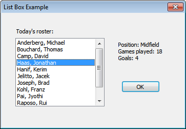

This topic demonstrates how to initialize and retrieve items from a simple list box.
The C++ code example in this topic includes a dialog box procedure that fills a list box with information about players on a sports team. When the user selects the name of a player from the list, information about the player is displayed in the dialog box. The window style for the list box includes LBS_SORT, which results in a sorted list of items. The following screen shot shows the dialog box.

The application must perform the following list box–related tasks:
In the following C++ code example, information about players is stored in an array of structures. During initialization, the dialog box procedure uses the LB_ADDSTRING message to add the names of team members to the list box (IDC_LISTBOX_EXAMPLE) one at a time. It also uses the LB_SETITEMDATA message to add the array index of the player to the list box as item data. Later, when the user selects a player from the list box, the dialog box procedure uses the LB_GETITEMDATA message to retrieve the corresponding array index. It then uses the array index to retrieve player information from the array.
typedef struct
{
TCHAR achName[MAX_PATH];
TCHAR achPosition[12];
int nGamesPlayed;
int nGoalsScored;
} Player;
Player Roster[] =
{
{TEXT("Haas, Jonathan"), TEXT("Midfield"), 18, 4 },
{TEXT("Pai, Jyothi"), TEXT("Forward"), 36, 12 },
{TEXT("Hanif, Kerim"), TEXT("Back"), 26, 0 },
{TEXT("Anderberg, Michael"), TEXT("Back"), 24, 2 },
{TEXT("Jelitto, Jacek"), TEXT("Midfield"), 26, 3 },
{TEXT("Raposo, Rui"), TEXT("Back"), 24, 3},
{TEXT("Joseph, Brad"), TEXT("Forward"), 13, 3 },
{TEXT("Bouchard, Thomas"), TEXT("Forward"), 28, 5 },
{TEXT("Salmre, Ivo "), TEXT("Midfield"), 27, 7 },
{TEXT("Camp, David"), TEXT("Midfield"), 22, 3 },
{TEXT("Kohl, Franz"), TEXT("Goalkeeper"), 17, 0 },
};
INT_PTR CALLBACK ListBoxExampleProc(HWND hDlg, UINT message,
WPARAM wParam, LPARAM lParam)
{
switch (message)
{
case WM_INITDIALOG:
{
// Add items to list.
HWND hwndList = GetDlgItem(hDlg, IDC_LISTBOX_EXAMPLE);
for (int i = 0; i < ARRAYSIZE(Roster); i++)
{
int pos = (int)SendMessage(hwndList, LB_ADDSTRING, 0,
(LPARAM) Roster[i].achName);
// Set the array index of the player as item data.
// This enables us to retrieve the item from the array
// even after the items are sorted by the list box.
SendMessage(hwndList, LB_SETITEMDATA, pos, (LPARAM) i);
}
// Set input focus to the list box.
SetFocus(hwndList);
return TRUE;
}
case WM_COMMAND:
switch (LOWORD(wParam))
{
case IDOK:
case IDCANCEL:
EndDialog(hDlg, LOWORD(wParam));
return TRUE;
case IDC_LISTBOX_EXAMPLE:
{
switch (HIWORD(wParam))
{
case LBN_SELCHANGE:
{
HWND hwndList = GetDlgItem(hDlg, IDC_LISTBOX_EXAMPLE);
// Get selected index.
int lbItem = (int)SendMessage(hwndList, LB_GETCURSEL, 0, 0);
// Get item data.
int i = (int)SendMessage(hwndList, LB_GETITEMDATA, lbItem, 0);
// Do something with the data from Roster[i]
TCHAR buff[MAX_PATH];
StringCbPrintf (buff, ARRAYSIZE(buff),
TEXT("Position: %s\nGames played: %d\nGoals: %d"),
Roster[i].achPosition, Roster[i].nGamesPlayed,
Roster[i].nGoalsScored);
SetDlgItemText(hDlg, IDC_STATISTICS, buff);
return TRUE;
}
}
}
return TRUE;
}
}
return FALSE;
}
Â
Â